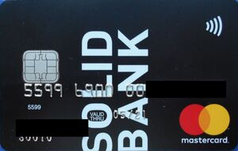

სოლიდ ბანკი
ჩვენს შესახებ
სოლიდ ბანკი არის ქართული ფინანსური ინსტიტუტი, რომელიც დაარსდა 1993 წელს.
ჩვენ გთავაზობთ ფართო სპექტრის ფინანსურ მომსახურებას, მათ შორის ვაჭრობის, კრედიტების, დეპოზიტების და სხვა ფინანსური პროდუქტების სფეროში.
ჩვენი მიზანია თქვენი ფინანსური საჭიროებების დაკმაყოფილება მაღალი ხარისხის სერვისით.

ჩვენი მისია:
ჩვენი მისიაა ინოვაციისა და ტექნოლოგიური სიახლეების დანერგვა,
რათა გაუმჯობესდეს მომხმარებელთა გამოცდილება და უზრუნველყოს სწრაფი და ეფექტური მომსახურება.
ჩვენი ღირებულებები:
მომხმარებლის ნდობა , პროფესიონალიზმი, საზოგადოებრივი პასუხისმგებლობა.
სოციალური პასუხისმგებლობა:
სოლიდ ბანკი
აქტიურად მონაწილეობს ადგილობრივ პროექტებში და მხარს უჭერს საზოგადოებრივ აქტივობებს,
რათა ხელი შეუწყოს რეგიონის განვითარებას.

პერსონალი:
გიორგი კალანდაძე - მთავარი აღმასრულებელი დირექტორი სტრატეგიული მართვა და ბიზნესის ზრდის ხელმძღვანელობა.
ლელა ძიძიგური - ფინანსური დირექტორი ბანკის ფინანსების მართვა და ფინანსური სტაბილურობის უზრუნველყოფა.
თამარ ონიანი - კლიენტების მომსახურების მენეჯერი კლიენტთა მოთხოვნების მართვა და მომსახურების ხარისხის უზრუნველყოფა.
გუგა აბაშიძე - საკრედიტო ოფიცერი კრედიტების შეფასება და რისკების მართვა.
მიხეილ ჭანტურია - IT განყოფილების ხელმძღვანელი ტექნოლოგიური ინფრასტრუქტურის მართვა და უსაფრთხოების უზრუნველყოფა.
მარიამ ბერიძე - იურიდიული მრჩეველი სამართლებრივი საკითხების მართვა და შესაბამისობის უზრუნველყოფა.
სალომე ქავთარაძე- საზოგადოებრივი ურთიერთობების მენეჯერი ბანკის კომუნიკაციისა და სარეკლამო კამპანიების მართვა.
ლაშა ხოჯავა- მომსახურების ოპერატორი მომხმარებლების მომსახურება ფილიალებში.
ნინო ალექსიძე- მარკეტინგის მენეჯერი სარეკლამო კამპანიების დაგეგმვა და ბრენდის პოპულარიზაცია.
ირაკლი ჭინჭარაული - პერსონალის მართვის მენეჯერი (HR) კადრების შერჩევა და თანამშრომელთა პროფესიული განვითარება.
ავტორი: